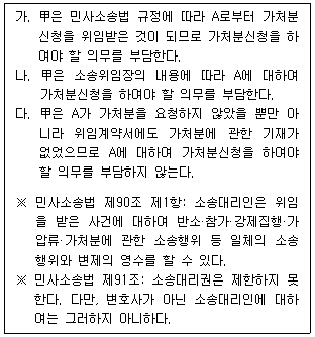
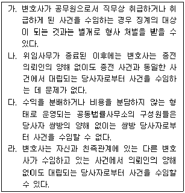
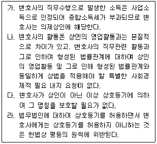
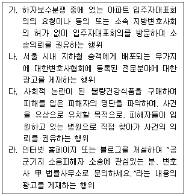
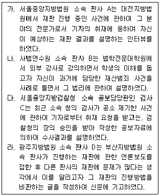

법조윤리 (2012-08-18 기출문제)
1과목: 임의 구분
1. 변호사와 의뢰인의 관계 등에 관한 설명 중 옳지 않은 것은?
- 변호사는 의뢰인이나 사건의 내용이 사회 일반으로부터 비난을 받는다는 이유만으로 수임을 거절하여서는 안 된다.
- 변호사가 국선변호인으로 선임된 때에는 피고인으로부터 따로 보수를 받아서는 안 된다.
- 변호사가 소송대리를 위임받은 사건에서 패소판결을 받았으나 상소에 관한 위임을 받지 못한 경우에는, 그 패소판결의 내용과 상소하는 때의 승소가능성에 대하여 의뢰인에게 구체적으로 설명하고 조언하여야 할 의무가 없다.
- 원고를 대리하여 손해배상청구소송을 진행하고 있는 변호사는 화해에 관하여 원고의 승낙을 얻어, 변호사 없이 본인 소송을 진행하고 있는 피고에게 직접 전화를 걸어 화해를 권유할 수 있다.
(정답률: 알수없음)

2. A는 B로부터 X토지를 매수하였는데 B는 등기를 미루고 있었다. 이에 A는 변호사인 甲을 찾아가 이러한 사정을 말한 후 소유권이전등기청구소송을 위임하였다. 甲이 위임의 취지에 따라 소송을 진행하던 중 B는 다시 C에게 이중으로 X토지를 매도한 다음 소유권이전등기를 마쳐주었고, 이로 인하여 A는 그 소송에서 패소하였다. 이에 A는 甲에게 소의 제기뿐만 아니라 가처분도 함께 위임하였는데 甲이 그 의무를 다하지 아니하여 손해가 발생하였다고 주장하고 있다. 위임계약시 A는 가처분을 요청하지 않았고 위임계약서에도 그에 관한 기재가 없으나, 소송위임장에는 위임의 범위로 '집행보전을 위한 가압류 및 가처분 신청 등에 필요한 모든 사항'이 포함되어 있다. 다음 설명 중 옳은 것을 모두 고른 것은? (다툼이 있는 경우에는 판례에 의함)

- 가
- 나
- 다
- 가, 나
(정답률: 알수없음)
3. 변호사 甲은 교통사고를 일으킨 A에 대한 교통사고처리특례법위반 사건을 상담하고 수임하기로 하여 A와 위임계약을 체결하였다. 그런데 A가 약정된 착수금을 지급하지 않자, 甲은 A에 대한 변론 준비를 하기도 전에 위 위임계약을 해지하였다. 그후 위 교통사고의 피해자인 B는, 교통사고로 인한 손해배상책임을 인수하는 내용의 보험계약을 A와 체결한 C보험회사를 상대로 위 교통사고로 인한 손해배상을 직접 청구하는 내용의 소를 제기하였다. B가 甲에게 위 손해배상청구 사건을 위임하려고 할 경우, 甲이 위 사건을 수임할 수 있는지 여부에 관한 설명으로 옳은 것은? (다툼이 있는 경우에는 판례에 의함)
- B는 교통사고처리특례법위반 사건의 피해자로서 A와 이해관계가 상반된 자이고, A의 보험자인 C를 상대로 제기한 손해배상청구 사건은 그 분쟁의 기초적 사실관계가 교통사고처리특례법위반 사건과 같아 실질적으로 동일한 사건이라고 할 것이므로, 甲은 A의 동의 유무와 관계없이 위 손해배상사건을 수임할 수 없다.
- C는 교통사고처리특례법위반 사건에서 A와 이해가 상반되는 상대방이 아니므로 甲은 누구의 동의 없이도 위 손해배상청구 사건을 수임할 수 있다.
- 위 교통사고처리특례법위반 사건과 손해배상청구 사건은 재판 절차가 달라 본질적으로 관련된 사건이라고 할 수 없으므로 甲은 누구의 동의 없이도 위 손해배상청구 사건을 수임할 수 있다.
- 위 교통사고처리특례법위반 사건과 손해배상청구 사건은 실질적으로 동일한 사건이라고 할 것이나, 이 사안에서는 甲이 A에 대한 변론 준비를 하기도 전에 A와의 위임계약을 해지하였으므로, 甲은 A의 동의 없이도 위 손해배상청구 사건을 수임할 수 있다.
(정답률: 알수없음)
4. 변호사와 의뢰인의 관계에 대한 설명 중 옳지 않은 것은?
- 변호사가 수임한 법률사무를 성실하게 처리하지 않으면 민사상 채무불이행책임을 부담할 수 있다.
- 사무직원의 과실로 항소기간을 도과한 경우 변호사는 사무직원에 대한 지휘·감독의무를 소홀히 하지 않았음을 증명한 이상 법적 책임을 부담하지 않는다.
- 변호사가 개인적인 일정으로 민사사건 변론기일에 출석하지 못할 사정이 있어 복대리인을 선임하는 경우 미리 의뢰인의 동의를 얻어야 한다.
- 변호사는 의뢰인과 상담함에 있어서 공정한 입장에서 가능한 한 조속히 의뢰인이 결정을 내릴 수 있도록 필요한 설명을 하여야 한다.
(정답률: 알수없음)
5. 변호사의 의뢰인에 대한 의무와 책임에 관한 설명 중 옳지 않은 것은? (다툼이 있는 경우에는 판례에 의함)
- 변호사가 위임의 본지에 따라 법률사무를 처리하였더라면 지출하지 아니하여도 될 비용을 위임의 본지에 따라 법률사무를 처리하지 않았기 때문에 의뢰인이 지출한 경우에는 변호사가 이를 배상하여야 한다.
- 변호사가 의뢰인에게 인도할 금전 또는 의뢰인의 이익을 위하여 사용할 금전을 자기를 위하여 소비한 때에는 소비한 날 이후의 이자를 지급하여야 하며 그 외의 손해가 있으면 배상하여야 한다.
- 항소심에서 패소한 상고사건을 수임한 변호사가 과실로 기간 내에 상고이유서를 제출하지 아니하여 상고가 기각됨으로 인한 재산상 손해배상을 청구받는 경우, 그 책임을 면하기 위하여는 자신의 과실이 없었더라도 상고인이 승소할 수 없었을 것임을 주장·입증하여야 한다.
- 의뢰인의 지시가 의뢰인에게 불리한 경우에 변호사는 그런 사실을 의뢰인에게 알려 주어야 할 뿐 아니라, 나아가 의뢰인이 한 지시의 변경을 요구 또는 권고하여야 할 의무도 있다.
(정답률: 알수없음)
6. 변호사의 비밀유지의무에 관한 설명 중 옳은 것은?
- 변호사는 업무수행에 필요한 경우 자신이 운영하는 법률사무소의 직원에게 의뢰인의 비밀을 공개할 수 있으나 그 직원으로 하여금 비밀을 유지하게 하여야 한다.
- 변호사는 의뢰인이 소송사건을 의뢰하면서 그 사건에 관련된 자신의 비밀을 다른 변호사에게 공개하지 말 것을 명시적으로 요구한 경우에도 같은 법무법인의 변호사에게는 이를 공개할 수 있다.
- 변호사에게 부과된 비밀유지의무는 공적인 성질을 가지므로 의뢰인이 허락한다고 하더라도 비밀을 공개할 수 없다.
- 변호사는 직무상 알게 된 의뢰인의 비밀이라고 하더라도 공익상의 이유가 있는 때에는 제한 없이 이를 공개할 수 있다.
(정답률: 알수없음)
7. 변호사의 징계처분의 공개 및 정보제공 등에 관한 설명 중 옳지 않은 것은?
- 대한변호사협회의 장은 변호사에 대한 징계처분을 하면 이를 지체 없이 대한변호사협회가 운영하는 인터넷 홈페이지에 3개월 이상 게재하는 등 공개하여야 한다.
- 징계처분의 공개 범위, 징계정보의 열람·등사 절차에 관하여 필요한 사항은 변호사법 시행령에서 규정하고 있다.
- 변호사를 선임하기 위하여 면담만 한 사람은 그 변호사에 대한 징계정보의 열람·등사를 신청할 수 없다.
- 변호사와 사건수임 계약을 체결한 자의 직계존비속, 동거친족 또는 대리인도 그 변호사에 대한 징계정보의 열람·등사를 신청할 수 있다.
(정답률: 알수없음)
8. A는 비상장 주식회사인 X사의 주식 100%를 소유하고 있었는데, 이를 B에게 전부 매도하면서 주식매매거래에 관한 일체의 자문과 협상을 변호사 甲에게 의뢰하였다. A는 X사의 부채에 관한 일부 자료를 은폐하여 위 주식을 고가로 매도할 수 있었고, 당시 甲은 이에 관해 알지 못했다. X사를 인수한 이후에 위 은폐사실을 알게 된 B는, A와 甲이 공모하여 불법행위를 저질렀다면서 이들을 상대로 손해배상청구의 소를 제기하였다. 한편, 甲은 소송과정에서 위 주식매매거래 당시 A로부터 제공받은 비밀정보가 A가 단독으로 위 은폐행위를 한 것이라는 점을 입증할 수 있는 유일한 증거임을 알게 되어 이를 위 손해배상소송에서 증거로 제출하였다. 甲의 행위가 징계의 대상이 되는지에 관한 설명 중 옳은 것은?
- 甲이 A가 부채 자료를 은폐하였다는 증거를 제출하였으므로, 甲의 행위는 징계의 대상이 된다.
- A의 은폐행위는 과거의 위법행위이나, 변호사의 비밀유지의무의 대상이 되므로 甲의 행위는 징계의 대상이 된다.
- 손해배상소송이 비공개로 진행된 경우에 한하여 甲의 행위는 징계의 대상이 되지 않는다.
- 甲의 행위로 A가 형사처벌을 받게 되더라도, 甲의 행위는 징계의 대상이 되지 않는다.
(정답률: 알수없음)
9. 변호사 甲은 A로부터 X토지에 대한 B 명의의 소유권보존등기말소청구 사건을 수임하면서 성공보수로 X토지의 20% 지분을 넘겨받기로 약정하고 미리 소유권이전등기에 필요한 서류를 받아두었다. 甲은 위 소송에서 승소확정 판결을 받아 A 명의로 소유권보존등기를 마치고 X토지의 20% 지분을 甲 명의로 이전등기하였다. 그후 甲은 다시 A로부터 B를 상대로 한 X토지에 관한 차임 상당의 부당이득반환청구 사건을 수임하면서 수임료를 승소금액의 20%로 약정하고, 부당이득반환청구의 소를 제기하여 전부 승소판결을 받고 위 판결은 확정되었다. A의 요청으로 甲은 수임료 대신 위 부당이득반환채권 중 20%를 양수하였다. 아래 설명 중 옳은 것은? (다툼이 있는 경우에는 판례에 의함)
- 甲이 X토지의 20% 지분을 넘겨받은 것은 변호사법에서 금지하는 계쟁권리의 양수에 해당된다.
- 甲이 X토지의 20% 지분을 넘겨받기로 약정한 것이 계쟁권리의 양수에 해당되면 위 약정은 무효가 된다.
- 甲이 위 부당이득반환청구채권 중 20%를 양수한 행위는 계쟁권리의 양수가 아니다.
- 甲이 위 부당이득반환청구채권 중 20%를 양수하기로 한 약정이 과다하다고 인정되더라도, 이는 당사자 간의 적법한 의사에 기한 계약이므로 A가 그 의사표시에 하자가 있음을 주장·입증하지 못하는 한 감액될 수 없다.
(정답률: 알수없음)
10. 변호사 甲은 A와 B 사이의 사해행위취소소송에서 원고 A의 대리인으로서 소송을 진행하였다. 제1회 변론기일에서 甲의 패기 넘치는 변론에 감동받은 상대방 B가 다음날 자신의 C에 대한 대여금 사건을 맡아 소송을 진행하여 줄 것을 부탁하자, 甲은 A에게 즉시 이를 통보한 후 B와 수임을 약정하여 대여금반환청구소송을 진행하고 있다. 이러한 甲의 수임행위에 대한 설명 중 옳은 것은?
- 사해행위취소소송과 대여금반환청구소송은 다른 사건이므로 甲의 수임행위는 적법하다.
- 현재 수임하고 있는 사건의 상대방이 위임하는 다른 사건에 해당하여 어떠한 경우에도 수임할 수 없다.
- 甲이 A에게 위 대여금반환청구소송을 수임한다는 것을 즉시 통보하였으므로 적법하다.
- 다른 사건이라고 하더라도 A의 동의 없이 상대방 B의 사건을 수임하는 것은 위법하다.
(정답률: 알수없음)
11. A는 법무법인 L의 구성원 변호사인 甲에게 이혼청구소송을 의뢰하여 법무법인 L이 A의 소송대리인이 되어 B를 상대로 이혼청구의 소를 제기하였는데, 제1심 소송 진행 중 甲은 법무법인 L을 퇴사하여 개인법률사무소를 운영하게 되었다. 이와 관련한 설명 중 옳은 것은?
- 甲이 법무법인 L을 퇴사한 후에는 진행 중인 제1심 재판에서 甲은 B의 소송대리인이 될 수 있다.
- A가 법무법인 L과의 위임계약을 해지한 경우에는, 법무법인 L은 A에 대한 사임계를 제출하고 B로부터 위 사건을 수임하여 B의 소송대리인이 될 수 있다.
- 제1심 판결 선고 후 항소심에서는 법무법인 L이 B의 소송대리인이 될 수 있다.
- 甲이 법무법인 L을 퇴사한 후 A가 법무법인 L과의 위임계약을 해지한 경우라도 甲은 제1심 진행 중에는 A로부터 사건을 수임할 수 없다.
(정답률: 알수없음)
12. 다음 중 수임제한 사유에 해당하지 않는 것은?
- 법원의 조정위원으로 취급한 손해배상청구사건의 원고를 대리하는 행위
- A가 B를 상대로 제기한 소송에서 A의 소송대리인으로부터 복대리인으로 선임되었는데, 복대리인을 사임한 후 동일 소송에서 B를 대리하는 행위
- 폭행사건으로 기소된 공동피고인 C, D가 서로 상대방이 주범이고 자신은 종범일 뿐이라고 다투고 있는 경우에 C, D 모두를 위한 변호인으로 선임되는 행위
- 매도인과 매수인 사이에 토지 매매계약이 체결됨에 따라 매매계약 쌍방으로부터 소유권이전등기신청의 대리행위를 의뢰받아 하는 등기신청행위
(정답률: 알수없음)
13. 변호사와 의뢰인의 관계에 관한 설명 중 옳지 않은 것은? (다툼이 있는 경우 판례에 의함)
- 변호사와 의뢰인의 수임계약은 원칙적으로 약정한 위임사무의 처리가 완료되었을 때 종료되므로 당해 심급의 판결이 선고된 때에 수임받은 소송사무가 종료된다.
- 민법상 위임사무는 당사자의 사망으로 종료되지만, 변호사의 소송대리권은 의뢰인이 사망하더라도 소멸되지 아니한다.
- 변호사는 수임한 민사사건에서 패소할 것으로 확신하고 의뢰인에게 법원의 조정에 응할 것을 제안하였지만, 의뢰인이 다른 변호사와 상담한 결과를 이유로 조정에 반대하는 경우에는 특별한 사정이 없는 한 사임할 수 있다.
- 변호사는 사취당한 수표와 관련된 본안소송을 위임받은 경우에 사고신고담보금에 대한 보전조치의 위임을 별도로 받은 바가 없다면 적극적으로 사고신고담보금에 대한 권리보전조치로서 지급은행에 소송계속 중임을 증명하는 서면을 제출하여야 할 의무는 없다.
(정답률: 알수없음)
14. 수임제한에 관한 다음 설명 중 옳은 것을 모두 고른 것은?

- 가, 다
- 가, 라
- 나, 다
- 다, 라
(정답률: 알수없음)
15. 다음 변호사의 광고 중 변호사법위반으로 형사처벌을 받지 않는 것은?
- 변호사의 업무에 관하여 거짓된 내용을 표시하는 광고
- 국제변호사를 표방하거나 그 밖에 법적 근거가 없는 자격이나 명칭을 표방하는 내용의 광고
- 소비자에게 업무수행 결과에 대하여 부당한 기대를 가지도록 하는 내용의 광고
- 법무법인이 아니면서 법무법인 또는 이와 유사한 명칭을 사용하는 광고
(정답률: 알수없음)
16. 징계절차의 개시에 관한 설명 중 옳은 것은?
- 의뢰인이나 의뢰인의 법정대리인·배우자·직계친족 또는 형제자매는, 수임변호사에게 변호사법에 규정된 징계 사유가 있으면 소속 지방변호사회의 장에게 징계개시의 신청을 청원할 수 있다.
- 지방검찰청 검사장은, 검찰 업무의 수행 중 변호사에게 변호사법에 규정된 징계 사유가 있는 것을 발견하였을 때에는 소속 지방변호사회의 장에게 징계개시를 청구할 수 있다.
- 법조윤리협의회 위원장은, 공직퇴임변호사에게 변호사법에 규정된 징계 사유가 있는 것을 발견하였을 때에는 소속 지방변호사회의 장에게 징계개시를 청구할 수 있다.
- 대한변호사협회의 장은, 변호사에게 변호사법에 규정된 징계 사유가 있는 것을 발견하였을 때에는 소속 지방변호사회에 설치된 변호사징계위원회의 위원장에게 징계개시를 신청할 수 있다.
(정답률: 알수없음)
17. 변호사 甲은 A의 국선변호인이다. A는 현재 살인 혐의로 기소되어 형사재판이 진행 중이다. 甲이 A를 접견하여 살인의 동기나 현재 밝혀진 증거들의 진실성 등에 대해서 질문을 하였지만, A는 甲의 질문에 빈정대기나 할 뿐 甲의 변호활동에 전혀 협조적이지 않다. 심지어 변호사는 모두 잘난 사람들이어서 자신과 같은 사람에게는 해가 될 뿐이라고 하면서 욕을 해대기도 한다. 이제 甲도 A를 위해서 변호를 할 생각이 들지 않는다. 이 경우 甲이 취할 행동으로 옳은 것은?
- 성실한 변호를 포기하고 형식적으로만 변론행위를 한다.
- 국선변호인은 사임의 자유가 제한되므로, 법원에 사임의 허가를 요청한다.
- 피고인과 변호인 사이의 신뢰가 무너진 경우, 국선변호인도 사선변호인과 마찬가지로 피고인에게 사임의 의사를 표시함으로써 사임한다. 다만 피고인이 새로운 변호사를 선임할 시간적 여유를 주어야 한다.
- 국선변호인의 사임은 허용되지 않으므로 당해 심급이 끝날 때까지는 A를 위해 최선을 다하여 변론해야 한다.
(정답률: 알수없음)
18. 변호사윤리에 관한 설명 중 옳지 않은 것은?
- 변호사는 성공보수를 조건부로 미리 받을 수 있다.
- 변호사는 증인에게 위증을 교사하거나 허위의 증거를 제출하려는 의뢰인의 위법행위에 가담하여서는 안 된다.
- 변호사는 소송진행과정에서 출정시간과 서류의 제출 기타의 기한을 준수하고 소송지연을 목적으로 하는 행위를 하여서는 안 된다.
- 변호사는 변론 또는 준비서면 등에 상대방을 모욕하는 언사를 사용하여서는 안 된다.
(정답률: 알수없음)
19. 변호사의 지위에 관한 다음 설명 중 옳은 것을 모두 고른 것은? (다툼이 있는 경우에는 판례에 의함)

- 가, 나
- 가, 다
- 나, 다
- 나, 라
(정답률: 알수없음)
20. 변호사윤리장전에 따른 변호사의 직업윤리에 관한 설명 중 옳지 않은 것은?
- 변호사는 기본적 인권의 옹호와 사회정의의 실현을 사명으로 한다.
- 변호사는 외국(혹은 외국인)과 관련된 사무를 처리함에 있어서 해당국의 변호사윤리까지 존중할 의무는 없다.
- 변호사는 직무의 성과에 구애되어 진실규명을 소홀히 하여서는 안 된다.
- 변호사는 사생활에 있어서도 호화와 사치를 피하고 검소한 생활로 타의 모범이 되어야 한다.
(정답률: 알수없음)
2과목: 임의 구분
21. 외국법자문사에 관한 설명 중 옳은 것은?
- 외국법자문사는 원자격국의 법령에 관한 자및 원자격국과 같은 언어를 사용하는 국가의 법령에 관한 자문을 할 수 있다.
- 외국법자문사 신청인이 둘 이상의 국가에서 외국법자문사 자격승인 요건을 모두 갖춘 경우라도 법무부장관은 그중 하나의 국가만 원자격국으로 지정하여야 한다.
- 외국법자문사가 변호사·법무사·변리사·공인회계사·세무사 및 관세사를 고용한 경우 외국법자문사뿐만 아니라 고용된 변호사·법무사·변리사도 형사처벌을 받게 되나, 공인회계사·세무사 및 관세사는 형사처벌을 받지 않는다.
- 외국법자문사가 업무능력이나 재산상황이 현저히 악화되어 의뢰인이나 제3자에게 손해를 입힐 우려가 있고 그 손해를 방지하기 위하여 부득이하다고 판단되는 경우 법무부장관은 외국법자문사의 자격승인을 취소할 수 있으며, 이 경우 청문을 하여야 한다.
(정답률: 알수없음)
22. 변호사시험에 합격한 변호사의 지위에 대한 설명 중 옳지 않은 것은?
- 변호사시험에 합격한 변호사는 6개월 이상 변호사법이 정한 법률사무종사기관에서 법률사무에 종사하거나 대한변호사협회 연수를 마치지 아니하면 단독으로 법률사무소를 개설하거나 법무법인, 법무법인(유한) 및 법무조합의 구성원이 될 수 없다.
- 변호사시험에 합격한 변호사는 법률사무종사기관에서 6개월 이상 법률사무에 종사하거나 연수를 마치지 아니하면 사건을 단독 또는 공동으로 수임할 수 없다.
- 위 ①, ②의 법률사무 종사기간이나 연수기간을 충족하려면 변호사시험 합격 후 1년 이내에 연속하여 6개월 이상 법률사무에 종사하거나 연수를 마쳐야 한다.
- 변호사시험에 합격한 변호사는 단독이나 공동수임이 아닌 법무법인, 법무법인(유한) 또는 법무조합의 담당변호사로 지정되기 위하여도 6개월 이상 법률사무에 종사하거나 연수를 마쳐야 한다.
(정답률: 알수없음)
23. 甲이 2011. 8. 9. 서울중앙지방법원 민사합의부에 재직할 당시 배석판사로 취급한 손해배상청구 사건이 이송되어 2012. 6. 9. 현재 대구지방법원에 계속 중이다. 한편, 甲은 서울중앙지방법원에서 계속 근무하다 2012. 5. 31. 퇴직하여 개업하였다. 다음 중 甲이 수임할 수 있는 사건은?
- 대구지방법원으로 이송되어 계속 중인 위 손해배상청구 사건
- 위 손해배상청구 사건의 원고가 피고를 사기죄로 고소한, 사건의 쟁점이 동일한 형사사건으로 현재 서울중앙지방검찰청에서 수사 중인 사건
- 자신이 판사로 재직 중인 기간에 전혀 관여한 바가 없는 사건으로 현재 서울중앙지방법원에 계속 중인 다른 민사소송사건
- 자신이 서울중앙지방법원에 근무할 당시 대구지방법원에 소 제기되어 담당판사의 요청으로 조언을 했던 사건
(정답률: 알수없음)
24. 기업의 고문변호사에 관한 설명 중 옳지 않은 것은?
- 고문변호사는 고문회사에 대해 사용종속관계에 있는 것은 아니다.
- 고문변호사가 고문을 맡고 있는 고문회사의 감사로 취임하기 위해서는 지방변호사회의 겸직허가를 받아야 한다.
- 고문변호사도 법률자과정에서 알게 된 고문회사의 비밀에 대하여는 비밀유지의무가 있다.
- 고문회사와 A 사이에 발생한 분쟁에 대하여 고문변호사가 고문회사에게 구체적인 법률자문을 해주었는데, 그 후 A가 그 분쟁 사안에 관하여 고문회사를 상대로 소를 제기한 경우에 고문변호사는 A로부터 그 사건을 수임할 수 없다.
(정답률: 알수없음)
25. 변호사의 수임제한에 관한 설명 중 옳지 않은 것은? (다툼이 있는 경우에는 판례에 의함)
- 기업회생 사건의 업무를 담당한 판사는 변호사 개업 후 그 회사의 회생절차 기간 중에 있었던 그 회사의 모든 사건에 대하여 업무를 수행할 수 없다.
- 판사가 사건을 배당받은 후 기일이 지정되지 않은 상태에서 퇴직한 경우 그 사건을 변호사로 수임하는 것은 허용되지 않는다.
- 경매사건을 담당한 판사는 변호사 개업 후 그 경매사건의 경매물건 하자를 이유로 채권자, 채무자, 감정인을 상대로 한 손해배상 사건의 대리인이 되어서는 안 된다.
- 특허등록 무효사건을 취급한 대법원 재판연구관은 변호사 개업 후 그 특허등록 무효사건의 일방 당사자가 제기한 특허침해를 원인으로 한 손해배상청구소송의 피고를 대리하여서는 안 된다.
(정답률: 알수없음)
26. 공직퇴임변호사에 관한 설명 중 옳지 않은 것은?
- 법관 또는 검사로 재직하였던 변호사는 수임이 제한되는 공직퇴임변호사에 속한다.
- 공직퇴임변호사는 퇴직 전 1년부터 퇴직한 때까지 자신이 근무한 국가기관이 처리하는 사건을 퇴직한 날부터 1년 동안 수임할 수 없다.
- 공직퇴임변호사는 퇴직일부터 1년간 수임자료와 처리결과를 소속 지방변호사회에 제출하고, 각 지방변호사회는 이를 법조윤리협의회에 제출하여야 한다.
- 공직퇴임변호사가 수임자료와 처리결과를 소속 지방변호사회에 제출하지 않거나 거짓 자료를 제출하면 1,000만 원 이하의 과태료가 부과된다.
(정답률: 알수없음)
27. 다음 중 변호사 광고로서 허용되지 않는 행위를 모두 고른 것은?

- 가, 나
- 가, 다
- 나, 라
- 다, 라
(정답률: 알수없음)
28. 다음 설명 중 옳지 않은 것은?
- 변호사는 소송에 관한 행위 및 행정처분의 청구에 관한 대리행위와 일반 법률사무를 하는 것을 그 직무로 한다.
- 변호사가 해외이주법에 의한 해외이주신고를 대리하는 행위는 변호사법상 변호사의 직무에 당연히 포함되는 것이므로 겸직허가를 받을 필요가 없다.
- 변호사가 변리사 업무를 하고자 할 때 겸직허가를 받을 필요가 없다.
- 변호사가 일반 법률사무에 당연히 포함되어 있는 세무사 업무를 변호사 명의로 수행하는 것이 아니라, 세무사법에 따라 세무사등록을 하여 세무사 업무를 하고자 하는 경우에는 겸직허가를 받을 필요가 있다.
(정답률: 알수없음)
29. 변호사법상 사건의 수임에 관한 설명 중 옳지 않은 것은? (다툼이 있는 경우에는 판례에 의함)
- 사전에 대가를 받기로 약속하지 않고 법률사건의 당사자를 변호사에게 알선한 후 그 대가로 금품을 받거나 요구하는 것은 형사처벌의 대상이 된다.
- 변호사법상 형사처벌의 대상이 되는 알선행위가 성립하기 위하여 당사자와 변호사 사이에 현실적으로 위임계약이 체결될 필요는 없다.
- 변호사가 변호사법상 형사처벌의 대상이 되는 알선에 의하여 법률사건을 수임한 경우 그 수임계약은 사법상 무효이고, 수임료는 형사상 범죄에 기하여 얻은 부정한 이익으로 추징의 대상이다.
- 변호사 아닌 자가 변호사에게 법률사건의 당사자를 알선하는 것은 물론, 변호사가 변호사에게 이를 알선하고 그 대가를 받는 것도 형사처벌의 대상이다.
(정답률: 알수없음)
30. 변호사법 및 외국법자문사법상 보수분배 금지규정에 위반되지 않는 경우는?
- 변호사가 인터넷 포털 사이트와 업무제휴를 하고 그 사이트를 통하여 법률사무를 위임받고 수임료 중 일부를 그 대가로 지급하는 경우
- 변호사가 에이알에스(ARS)와 연계된 인터넷 유료법률상담 사이트를 운영하면서 유료전화 상담에 참여한 세무사와 전화상담에 따른 상담료를 분배하는 경우
- 변호사가 변리사 또는 세무사를 고용하여 특허 또는 세무업무를 처리하고 이들에게 임금을 지급하는 경우
- 자유무역협정 등의 당사국에 본점사무소가 설립·운영되고 있는 외국법자문법률사무소가 사전에 공동사건 처리 등을 위한 등록을 하고 대한민국의 법률사무소, 법무법인, 법무법인(유한) 또는 법무조합과 사안별 개별 계약에 따라 모든 법률사건을 공동으로 처리하고, 그로부터 얻게 되는 수익을 분배하는 경우
(정답률: 알수없음)
31. '법무법인'과 '법무법인(유한)'의 구성 및 책임에 관한 설명 중 옳지 않은 것은?
- 구성원 변호사 3명으로 운영되던 '법무법인'에서 구성원 변호사 1명이 탈퇴한 경우 탈퇴일로부터 3개월 이내에 구성원 변호사 1명을 보충하면 설립인가 취소처분을 면할 수 있다.
- 5명의 변호사로 구성하며 그 중 2명이 통산하여 10년 이상 판사직에 있었던 자인 경우 '법무법인(유한)'을 설립할 수 있다.
- '법무법인'의 업무수행 잘못으로 인하여 의뢰인에게 손해배상책임을 지는 경우 '법무법인'의 재산으로 그 채무를 완제할 수 없는 때에는 구성원 변호사 전원이 연대하여 변제할 책임이 있다.
- '법무법인(유한)'의 담당변호사가 고의나 과실로 인하여 수임사건의 위임인에게 손해배상책임을 지는 경우 그 담당변호사를 직접 지휘·감독한 구성원도 그 손해를 배상할 책임이 있으나, 다만 지휘·감독을 할 때에 주의를 게을리하지 아니하였음을 증명한 경우에는 책임을 지지 않는다.
(정답률: 알수없음)
32. 변호사 甲은 2011. 7. 다음과 같은 광고를 X시 Y동 소재 아파트 단지의 각 아파트 건물 입구 게시판에 게시하고 같은 내용의 우편물을 각 아파트 소유자의 요청이나 동의없이 발송하였다. ｢광고문안: “본 변호사는 2011. 7. 부과된 아파트 재산세부과처분을 취소하고 과다하게 부과된 재산세액을 환급받기 위한 소송을 준비하고 있습니다. 참고로 본 변호사는 지난 3년간 수임한 30건의 행정소송 중 24건을 승소하여 80%의 승소율을 기록한 X시내 최고의 행정소송 변호사입니다. 24건의 승소 사건 목록은 첨부와 같습니다. 재산세액 환급에 관심이 있으신 분들은 연락주시면 성의껏 답변드리겠습니다.”｣ 광고에 첨부된 목록에는 현재 수임중인 사건은 제외하고 과거에 취급한 사건의 당사자명, 사건번호와 판결일자 및 승소금액을 명시하였다. 甲은 위 광고에 대하여 소속 지방변호사회의 허가를 받지 않았고, 목록작성을 하면서 의뢰인들의 동의도 받지 않았다. X시에서 개업한 변호사 중 지난 3년간 30건 이상의 행정소송 사건을 수임하여 80% 이상의 승소율을 기록한 변호사는 甲 이외에는 없다. 위 광고와 관련한 다음 설명 중 옳은 것은?
- 승소율이 사실에 부합하는 이상 광고문안에 승소율을 표시하여도 무방하다.
- 甲의 승소율이 X시에서 최고인 이상 광고문안에 최고의 행정소송 변호사라는 표현을 사용하여도 무방하다.
- 각 아파트 소유자에게 우편물을 보낸 것은 허용되지 않는 행위이다.
- 광고에 과거에 취급한 사건의 목록을 첨부한 것은 허용된다.
(정답률: 알수없음)
33. 사내변호사에 관한 설명 중 옳지 않은 것은?
- 사내변호사가 자신을 고용한 회사의 사업에 대하여 법률 자업무를 수행하던 중 그 사업이 범죄행위에 해당한다고 판단된 때에는 즉시 그 협조를 중단하여야 한다.
- 사내변호사가 자신을 고용한 회사의 범죄행위를 대외적으로 공개하는 것을 허용할지 여부에 관하여 변호사의 비밀유지의무를 근거로 불허해야 한다는 견해도 있다.
- 주식회사에 고용된 사내변호사의 의뢰인은 주식회사 그 자체가 아니라 주식회사의 대주주이다.
- 법무법인에 재직 중인 변호사는 주식회사의 사내변호사로서 변호사 업무를 수행할 수 없다.
(정답률: 알수없음)
34. 변호사의 공익활동에 관한 설명 중 옳은 것은?
- 부득이한 사정이 있어서 공익활동의 시간을 완수하지 못한 개인회원에게는 당해 연도에 채우지 못한 시간만큼 다음 해의 공익활동 의무시간이 추가된다.
- 변호사의 공익활동은 어디까지나 변호사 개인의 자율적인 의지에 의해 수행되는 활동이므로, 공익활동 시간을 완수하지 못했더라도 변호사 징계 사유에 해당되지 않는다.
- 법조경력이 2년 미만이거나 60세 이상인 개인회원은 공익활동이 면제되기 때문에 법무법인 등의 공익활동수행변호사로 지정될 수 없다.
- 개인회원을 고용하고 있는 법인회원 또는 개인회원은 고용된 회원이 공익활동 등에 참여할 수 있도록 협력할 의무가 있다.
(정답률: 알수없음)
35. 사기죄로 구속기소된 피고인 A는 변호사 甲을 선임하여 담당재판부에 보석허가청구를 하였으나 기각되었다. 실의에 빠진 A는 우연히 변호사 乙이 담당재판장과 고등학교 동기동창이라는 사실을 알게 되었고, A는 乙을 선임하여 보석허가청구를 다시 하기 위하여 乙에게 접견을 요청하였다. 乙이 A를 접견하여 상담하고 사건을 수임하는 과정에 관한 설명 중 옳지 않은 것은?
- 乙은 A로부터 사건을 수임하면서 보석보증금을 성공보수로 전환하기로 하는 약정을 서면으로 체결할 수 있다.
- 乙은 甲이 보석허가청구를 하였다가 기각된 사실에 대해 경솔한 비판을 삼가야 한다.
- 乙은 A에게 “자신이 선임되어 다시 보석허가청구를 하면 담당재판장이 절친한 친구 사이이므로 보석허가청구가 받아들여질 가능성이 매우 높다.”라고 말해서는 안 된다.
- 위 사기 사건에는 이미 甲이 변호인으로 선임되어 있으므로 乙은 A의 변호인으로 선임될 수 없다.
(정답률: 알수없음)
36. 사건위임계약의 해지 시 보수금의 청구나 반환 여부 등에 관한 설명 중 옳지 않은 것은? (다툼이 있는 경우에는 판례에 의함)
- 변호사의 귀책사유로 의뢰인이 계약을 중도 해지한 경우 의뢰인은 변호사가 계약종료 당시까지 이행한 사무처리 부분에 관해서 상당하다고 인정되는 보수 금액 및 사무처리 비용을 착수금 중에서 공제한 나머지 착수금만 변호사로부터 반환받을 수 있다.
- 의뢰인이 위임계약에 따른 착수금지급의무를 이행하지 아니하여 변호사가 위임계약을 해지하고 사임한 경우 변호사는 이미 처리한 사무의 비율에 따라 보수금을 청구할 수 있다.
- 위임사무 처리를 위하여 상당한 노력을 투입한 후 의뢰인이 정당한 사유 없이 위임계약을 해지할 경우 승소로 간주하고 성공보수금을 청구할 수 있다는 내용으로 사건위임 약정을 한 때 의뢰인이 정당한 사유 없이 소송진행 중 위임계약을 해지하였다면 변호사는 의뢰인에게 성공보수금을 청구할 수 있으나, 이는 손해배상의 예정이므로 법원에 의해 감액될 수 있다.
- 변호사가 부득이한 사유없이 자신의 개인 사정으로 인해 사임한 경우 위임계약은 각 당사자가 언제든지 해지할 수 있으므로 변호사는 지급받은 착수금만 반환하면 되고, 의뢰인에게 불리한 시기에 사임하여 손해가 생겼다 하여도 이를 배상할 필요는 없다.
(정답률: 알수없음)
37. 판사와 검사가 구체적 사건에 관하여 대외적으로 의견 등을 표명한 행위 중 법관윤리강령 또는 검사윤리강령에 위배되지 않는 경우를 모두 고른 것은?

- 가, 나
- 가, 다
- 나, 다
- 다, 라
(정답률: 알수없음)
38. 변호사법에 따른 업무정지명령에 관한 설명 중 옳지 않은 것은?
- 법무부장관은 변호사가 공소제기되거나 징계 절차가 개시되어 그 재판이나 징계 결정의 결과 등록취소, 영구제명 또는 제명에 이르게 될 가능성이 매우 크고, 그대로 두면 장차 의뢰인이나 공공의 이익을 해칠 구체적인 위험성이 있는 경우에는 법무부 변호사징계위원회에 그 변호사의 업무정지에 관한 결정을 청구할 수 있다. 다만, 약식명령이 청구된 경우와 과실범으로 공소제기된 경우는 그러하지 아니하다.
- 법무부 변호사징계위원회는 법무부장관의 업무정지에 관한 결정의 청구를 받은 날로부터 1개월 이내에 업무정지에 관한 결정을 하여야 한다. 다만, 부득이한 사유가 있을 때에는 그 의결로 1개월의 범위에서 그 기간을 연장할 수 있다.
- 업무정지 기간은 6개월로 한다. 다만, 법무부장관은 해당 변호사에 대한 공판 절차 또는 징계 절차가 끝나지 아니하고 업무정지 사유가 없어지지 아니한 경우에는 법무부 변호사징계위원회의 의결에 따라 업무정지 기간을 갱신할 수 있다.
- 업무정지명령은 그 업무정지명령을 받은 변호사에 대한 해당 형사 판결이나 징계 결정이 확정된 뒤 법무부 변호사징계위원회의 의결로 효력을 잃는다.
(정답률: 알수없음)
39. 변호사 甲은 A로부터 B를 상대로 한 양수금청구사건을 수임하여 원고일부승소 판결을 받았고 그 즈음 판결이 확정되었다. 그 직후, A에 대하여 금전채권을 갖고 있는 C가 본안 소송 및 집행의 보전 방법을 찾기 위하여 甲을 찾아 상담하였고, 마침 위 양수금채권의 존재를 알고 있는 甲은 이를 가압류하면 되겠다고 생각하고 A의 동의 없이 C로부터 가압류 사건을 수임하였다. 甲은 위 양수금채권을 목적물로 삼아 채권가압류 신청을 하였다. 甲의 행위가 징계의 대상이 되는지에 관한 설명 중 옳은 것은?
- 변호사는 직무상 알게 된 의뢰인의 비밀을 이용하여서는 안 되므로, 甲의 행위는 징계의 대상이 된다.
- 甲은 A의 동의 없이 그를 상대로 하는 다른 사건을 수임하였으므로, 甲의 행위는 징계의 대상이 된다.
- A가 의뢰한 사건과 C가 의뢰한 사건은 별개의 사건이므로, 甲의 행위는 징계의 대상이 되지 않는다.
- 양수금청구사건에 관한 甲과 A 사이의 위임관계는 판결의 확정으로 종료되었으므로, 甲의 행위는 징계의 대상이 되지 않는다.
(정답률: 알수없음)
40. 변호사의 비밀유지의무 등에 관한 설명 중 옳지 않은 것은?
- 변호사가 의뢰인 범행의 수사에 대한 방어방법을 논의한 의견서를 작성하여 보관하다가 수사기관으로부터 압수당하게 된 경우, 변호사로서 의뢰인의 범죄행위에 협조해서는 안 된다는 의무가 비밀유지의무보다 우선하므로, 비밀유지의무를 들어 위 의견서에 대한 압수가 위법하다고 다툴 수는 없다.
- 변호사가 법률자문을 위하여 의뢰인으로부터 받아서 보관하고 있는 문서에 비밀이 포함되어 있더라도, 그 문서에 대한 압수를 거부할 수 없는 경우가 있다.
- 변호사는 원칙적으로 의뢰인과 사이에 이루어진 비밀인 자문내용을 수사기관에서 진술하여서는 안 된다.
- 변호사는 의뢰인의 형사공판절차에 증인으로 소환되더라도 비밀인 의뢰인과의 자문내용과 관련하여서는 원칙적으로 증언을 거부할 수 있다.
(정답률: 알수없음)